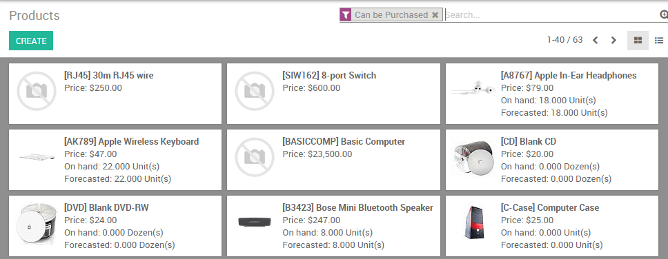
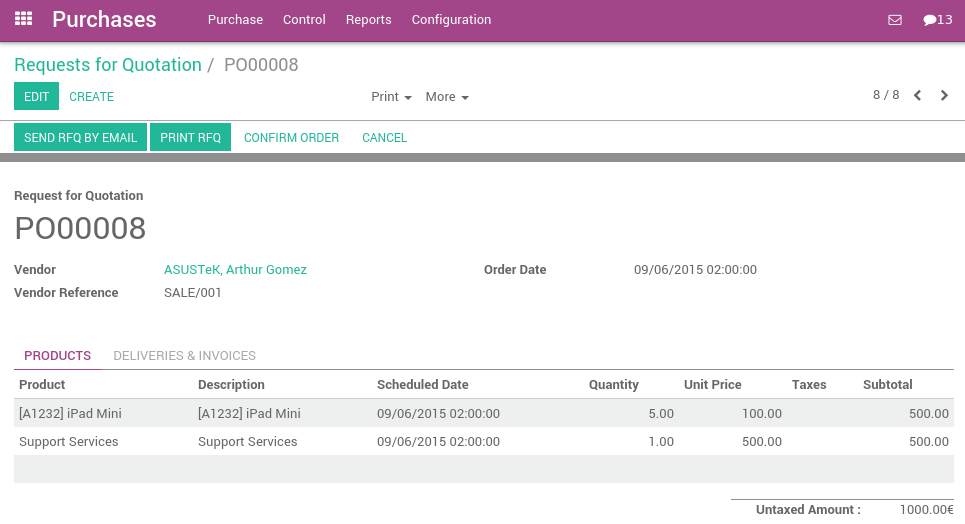
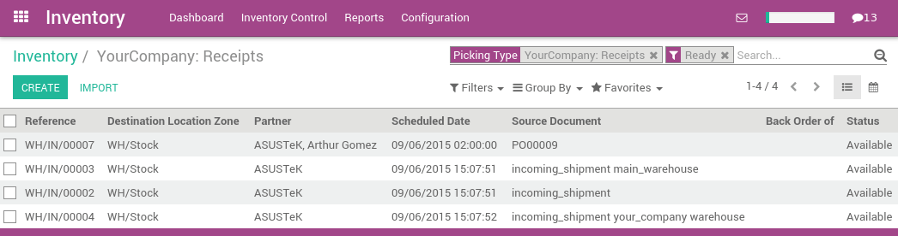
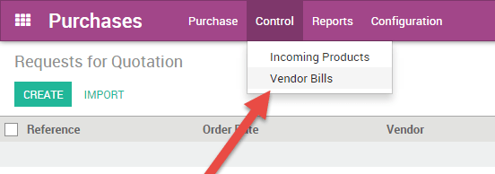
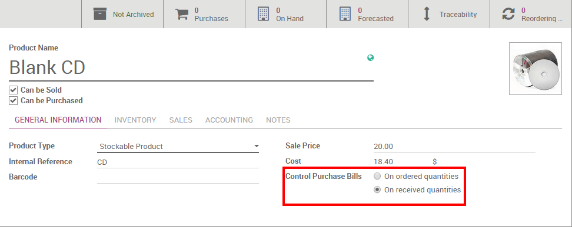

The Purchase application allows you to manage your purchase orders, incoming products, and vendor bills all seamlessly in one place.
If you want to set up a vendor bill control process, the first thing you need to do is to have purchase data in Odoo. Knowing what has been purchased and received is the first step towards understanding your purchase management processes.
Here is the standard work flow in Odoo:
- You begin with a Request for Quotation (RFQ) to send out to your vendor(s).
- Once the vendor has accepted the RFQ, confirm the RFQ into a Purchase Order (PO).
- Confirming the PO generates an Incoming Shipment if you purchased any stockable products.
- Upon receiving a Vendor Bill from your Vendor, validate the bill with products received in the previous step to ensure accuracy.
This process may be done by three different people within the company, or only one.
Configuration
Installing the Purchase and Inventory applications
From the Apps application, search for the Purchase module and install it. Due to certain dependencies, Installing Purchase will automatically install the Inventory and Accounting applications.
Creating products
Creating products in Odoo is essential for quick and efficient purchasing within Odoo. Simply navigate to the Products submenu under Purchase, and click create.
When creating the product, Pay attention to the Product Type field, as it is important:
- Products that are set as Stockable or Consumable will allow you to keep track of their inventory levels. These options imply stock management and will allow for receiving these kinds of products.
- Conversely, products that are set as a Service or Digital Product will not imply stock management, simply due to the fact that there is no inventory to manage. You will not be able to receive products under either of these designations.
Tip
It is recommended that you create a Miscellaneous product for all purchases that occur infrequently and do not require inventory valuation or management. If you create such a product, it is recommend to set the product type to Service.
Managing your Vendor Bills
Purchasing products or services
From the purchase application, you can create a purchase order with as many products as you need. If the vendor sends you a confirmation or quotation for an order, you may record the order reference number in the Vendor Reference field. This will enable you to easily match the PO with the the vendor bill later (as the vendor bill will probably include the Vendor Reference)
Validate the purchase order and receive the products from the Inventory application.
Receiving Products
If you purchased any stockable products that you manage the inventory of, you will need to receive the products from the Inventory application after you confirm a Purchase Order. From the Inventory dashboard, you should see a button linking you directly to the transfer of products. This button is outlined in red below:

Navigating this route will take you to a list of all orders awaiting to be received.
If you have a lot of awaiting orders, apply a filter using the search bar in the upper right. With this search bar, you may filter based on the Vendor (Partner), the product, or the source document, also known as the reference of your purchase order. You also have the capability to group the orders by different criteria under Group By. Selecting an item from this list will open the following screen where you then will receive the products.

Purchasing service products does not trigger a delivery order.
Managing Vendor Bills
When you receive a Vendor Bill for a previous purchase, be sure to record it in the Purchases application under the Control Menu. You need to create a new vendor bill even if you already registered a purchase order.
The first thing you will need to do upon creating a Vendor Bill is to select the appropriate Vendor as this will also pull up any associated accounting or pricelist information. From there, you can choose to specify any one or multiple Purchase Orders to populate the Vendor Bill with. When you select a Purchase Order from the list, Odoo will pull any uninvoiced products associated to that Purchase Order and automatically populate that information below. If you are having a hard time finding the appropriate Vendor bill, you may search through the list by inputting the vendor reference number or your internal purchase order number.

While the invoice is in draft state, you can make any modifications you need (i.e. remove or add product lines, modify quantities, and change prices).
Note
Your vendor may send you several bills for the same Purchase Order if:
- Your vendor is in back-order and is sending you invoices as they ship the products.
- Your vendor is sending you a partial bill or asking for a deposit.
Every time you record a new vendor bill, Odoo will automatically populate the product quantities based on what has been received from the vendor. If this value is showing a zero, this means that you have not yet received this product and simply serves as a reminder that the product is not in hand and you may need to inquire further into this. At any point in time, before you validate the Vendor Bill, you may override this zero quantity.
Vendor Bill Matching
What to do if your vendor bill does not match what you received
If the bill you receive from the vendor has different quantities than what Odoo automatically populates as quantities, this could be due to several reasons:
- the vendor is incorrectly charging you for products and/or services that you have not ordered,
- the vendor is billing you for products that you might not have received yet, as the invoicing control may be based on ordered or received quantities,
- or the vendor did not bill you for previously purchased products.
In these instances it is recommended that you verify that the bill, and any associated purchase order to the vendor, are accurate and that you understand what you have ordered and what you have already received.
If you are unable to find a purchase order related to a vendor bill, this could be due to one of a few reasons:
- the vendor has already invoiced you for this purchase order, therefore it is not going to appear anywhere in the selection,
- someone in the company forgot to record a purchase order for this vendor,
- or the vendor is charging you for something you did not order.
How product quantities are managed
By default, services are managed based on ordered quantities, while stockables and consumables are managed based on received quantities.
If you need to manage products based on ordered quantities over received quantities, you will need to belong to the group Purchase Manager. Ask your system administrator to enable these access on . Once you belong to the correct group, select the product(s) you wish to modify, and you should see a new field appear, labeled Control Purchase Bills.
You can then change the default management method for the selected product to be based on either:
- Ordered quantities
- or Received quantities
Batch Billing
When creating a vendor bill and selecting the appropriate purchase order, you may continue to select additional purchase orders and Odoo will add the additional line items from that purchase order.. If you have not deleted the previous line items from the first purchase order the bill will be linked to all the appropriate purchase orders.